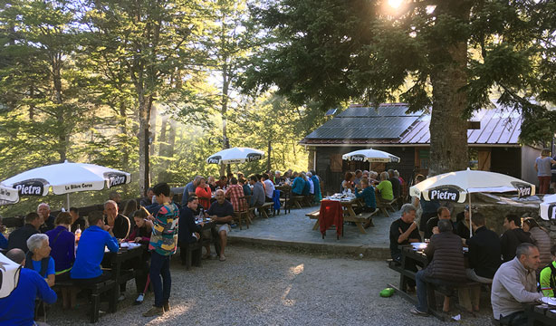
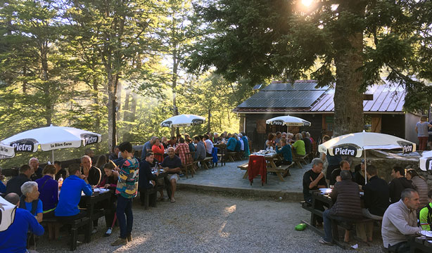

Bienvenue au Relais San Petru Di Verde
Situé à proximité du Col de Verde sur le GR20, notre gîte vous accueille pour une expérience unique en pleine nature.
Situé à proximité du Col de Verde sur le GR20, notre gîte vous accueille pour une expérience unique en pleine nature.
